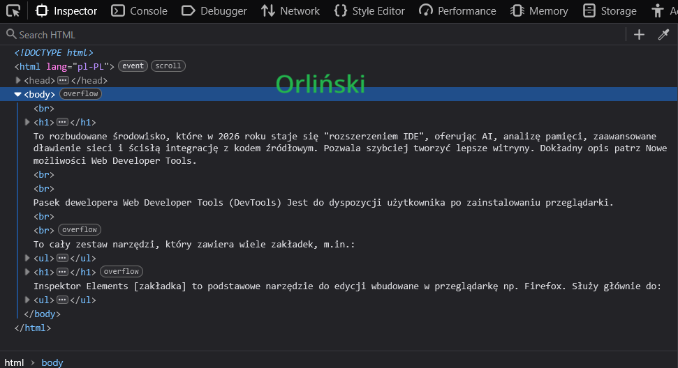
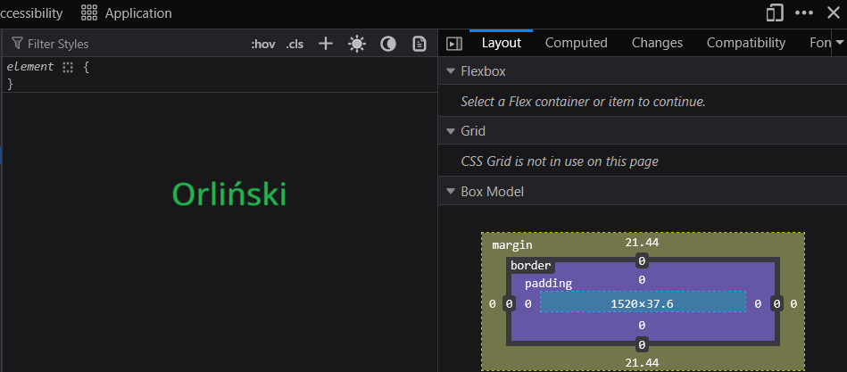

<!DOCTYPE html> <html lang="pl-PL"> <head> <meta charset="UTF-8"/> <title>Orliński z53_html</title> </head> <body> <br> <h1>Do czego służy Pasek dewelopera, kiedy jest gotowy do użycia, wymień zakładki Paska developera.</h1> To rozbudowane środowisko, które w 2026 roku staje się "rozszerzeniem IDE", oferując AI, analizę pamięci, zaawansowane dławienie sieci i ścisłą integrację z kodem źródłowym. Pozwala szybciej tworzyć lepsze witryny. Dokładny opis patrz Nowe możliwości Web Developer Tools.<br><br> Pasek dewelopera Web Developer Tools (DevTools) Jest do dyspozycji użytkownika po zainstalowaniu przeglądarki.<br><br> To cały zestaw narzędzi, który zawiera wiele zakładek, m.in.: <ul> <li>Elements / Inspector ← (to ten Inspektor opis patrz poniżej)</li> <li>Console (błędy i logi JavaScript)</li> <li>Network (ruch sieciowy) </li> <li>Sources (debugowanie kodu) </li> <li>Application / Storage (cookies, localStorage itd.) </li> </ul> <h1>Do czego służy Inspektor Elements, w jakiej zakładce się znajduje, do czego służy?</h1> Inspektor Elements [zakładka] to podstawowe narzędzie do edycji wbudowane w przeglądarkę np. Firefox. Służy głównie do: <ul> <li>podglądu struktury HTML strony </li> <li>edycji HTML i CSS „na żywo” </li> <li>sprawdzania stylów (kolory, marginesy, fonty) </li> <li>zaznaczania elementów na stronie </li> </ul> <br> <p></p> <br> <p></p> </body> </html> <!-- Orliński Z53_html-->